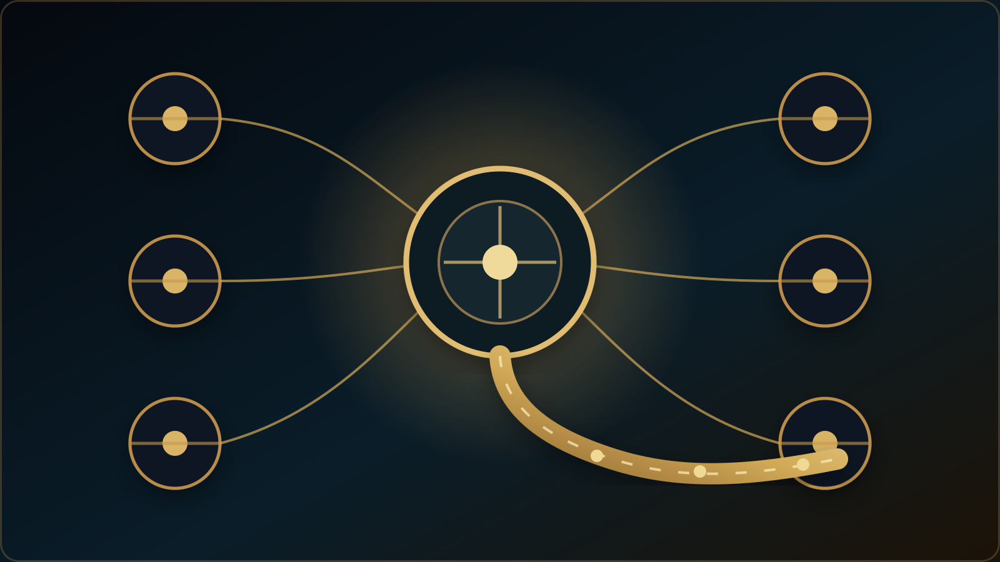

Manuscript Diagnostic Review
Up to 7,000 words · a prioritised revision report identifying problems of argument, method reporting and clarity.
12,000,000 toman
Academic, Educational & Professional Services
A manuscript, a student pathway, a teacher-development need and an institutional project are not versions of the same service. This hub separates them deliberately so that the evidence, scope, privacy requirements and form of professional judgement can match the problem rather than forcing every enquiry into a generic consultation.
These services extend Dr. Javad Rezazadeh Yazdeli’s work as a university lecturer and education researcher. Visitors may review his academic profile, research and publication record before requesting an individual service; professional support does not imply a guaranteed academic or educational outcome.

For researchers · three clearly scoped paid services
Select diagnostic review, academic English editing or structured reviewer-response support. These are existing catalogue services with published fees, not newly invented packages. Final payment availability, service conditions and amount are verified by the secure server before purchase. No journal acceptance or publication outcome is guaranteed.
Up to 7,000 words · a prioritised revision report identifying problems of argument, method reporting and clarity.
12,000,000 toman
Up to 5,000 words · language, coherence and scholarly expression of an existing manuscript; no ghostwriting.
15,000,000 toman
Up to 20 reviewer comments · organise a transparent, evidence-based response and revision priorities.
15,000,000 toman
Secure checkout verifies payment availability and your amount in real time. A payment does not confirm a deadline or service completion.
Need to confirm the scope first? Submit an academic-service enquiry. No article files or sensitive research data should be submitted through a public enquiry.
Interactive service discovery
Different educational, scholarly and institutional needs require different forms of evidence and professional work. Choose an audience and the issue at hand, then compare only services already represented in the approved catalogue. No personal information is requested or stored.
Four audience pathways
Before choosing a service
A researcher with a polished manuscript but a weak inference may need diagnostic review before language editing. A family comparing two educational pathways may first benefit from reviewing official programme requirements and completing a structured comparison rather than immediately purchasing an assessment. An institution planning a teacher-development event should clarify the intended professional change and how it could be examined after the event.
These examples point to a common principle: professional support should begin with a defined question, available evidence and a proportionate deliverable. Scope, limitations, privacy requirements and any fees should be clear before a commitment is made. A service can improve the quality of reasoning and decision-making without guaranteeing publication, admission or a particular developmental outcome.
Choose your pathway
For major exploration, educational pathway decisions and evidence-informed next steps.
Explore student guidanceFor deeper, multi-source developmental evidence, RCAS, D1–D6, Golden Path and BAHAR.
Explore Golden TalentFor English-language learning, materials, assessment, vocabulary and academic literacy.
Language educationFor professional learning around pedagogy, materials, assessment, research and responsible AI use.
Teacher educationFor scholarly collaboration, research discussion, publishing and academic engagement.
International collaborationFor a scoped academic, educational or professional enquiry when the correct route is not yet clear.
ContactBefore engaging a service · Illustrative example only
Consider a hypothetical manuscript examining the relationship between written feedback and language learners’ performance. The author draws a causal conclusion from observational data. This constructed case is provided to explain the nature of a diagnostic report; it is not a client case, completed commission, testimonial or claim of demonstrated outcomes.
Illustrative concern: the discussion states that feedback caused an improvement, although the reported design can establish an association rather than a causal effect.
Implication: the interpretation may exceed the inferential capacity of the evidence.
High priority: calibrate the causal claim to the design, clarify operational definitions and sampling, and make interpretive limitations explicit.
Subsequent priority: refine paragraph coherence, discipline-specific terminology and scholarly expression.
Indicative service outcome: a diagnostic report identifying the principal issues and recommending a defensible sequence of revision.
Professional boundary: diagnostic review does not entail generating data, substituting for the author or guaranteeing acceptance.
The depth, format, scope and timing of a real review depend on the manuscript and are agreed before work begins. This example does not promise a particular report length, turnaround time or editorial decision.
Academic & Researcher Services
These services are organised around clearly defined professional needs rather than generic packages. They are intended for researchers who need a specific piece of scholarly support, with scope agreed before any confidential manuscript or research material is exchanged.
Language, clarity and scholarly expression reviewed in relation to the argument and disciplinary purpose, rather than sentence correction in isolation.
Best fit: a developed manuscript that needs language and presentation refinement.A structured review of argument, coherence, positioning, method-reporting clarity and submission readiness, with priorities identified before line-level revision.
Best fit: a paper that feels unfinished or repeatedly encounters editorial difficulty.Focused discussion of research questions, design logic, evidence, interpretation or the relationship between a study and its literature.
Best fit: a defined research problem requiring scholarly judgement rather than outsourced authorship.Support for journal fit, submission strategy, editorial expectations and the practical interpretation of reviewer or editor feedback.
Best fit: a manuscript approaching submission, revision or resubmission.Help in analysing reviewer comments, deciding what requires revision and developing a professional, evidence-based response structure.
Best fit: authors revising after peer review while retaining responsibility for the scholarly decisions.Evidence-based review of academic positioning, CV architecture, application strategy and mock academic interview preparation where appropriate.
Best fit: researchers and educators preparing for a concrete academic opportunity.Service boundary
Public explanations, methodology pages and academic resources remain available without forcing users into consultation. Paid or private services should begin only where individual evidence, professional review, private records or scheduled support become necessary.
How a professional service should progress
Privacy & secure access
Student records, RCAS responses, private reports, appointments, messages and payments are kept outside public pages and handled only through appropriate private channels. Registration, verification, account recovery and general correspondence use email; telephone numbers are not used for account verification. Eitaa student support is reserved for eligible customers after a verified purchase, and its access details are not publicly displayed.
Evidence, context and professional responsibility
A student considering two fields of study, a teacher reviewing classroom assessment and a researcher responding to journal reviewers may all benefit from structured professional dialogue; however, they do not face the same problem, and no single assessment or service package should be presented as an answer to all three. A responsible starting point is to identify the decision, the evidence available and the practical scope of assistance.
For student guidance, the Golden Talent framework offers a proposed developmental perspective that separates sources of evidence and keeps pathways open to revision. In research and academic services, the corresponding priority is scholarly integrity: clarifying the argument, evaluating methodological fit and preserving authorship. The value of a service should therefore be expressed through transparent deliverables and limits, not through guaranteed admission, publication or educational success.
21 specialist services · Persian and English service descriptions
A service is more than a label or a price. Each pathway below explains its intended audience, expected deliverable, professional limits, verified catalogue tariff and the route to the established secure checkout. Educational, assessment and research support should remain proportionate to the actual question and evidence available.
The six VIP packages provide a proposed multi-stage scope, written deliverable and bounded follow-up. Their availability, conditions and payments require separate verification.
Compare six VIP programmes and their professional limits →